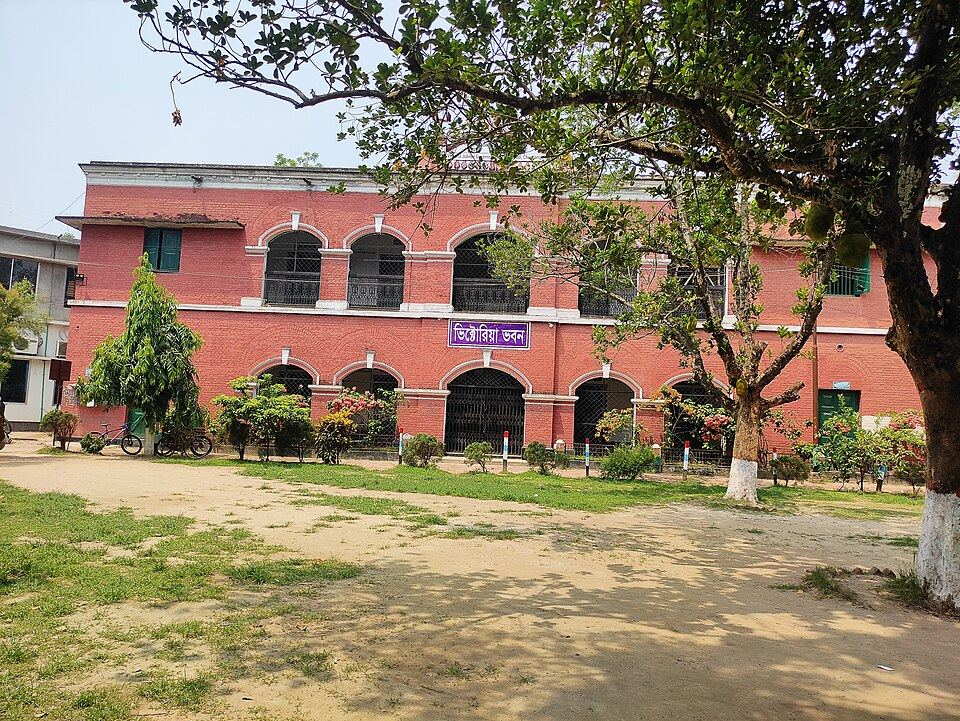

টিনশেড ঘর থেকে আজকের আলোকিত — ৪৬ বছরের পথচলা।
১৯৭৮ সালে কয়েকজন শিক্ষক আর এলাকার মানুষ মিলে একটা সাহসী কাজ শুরু করেছিলেন — মুখস্থ নয়, বুঝে পড়ার একটা স্কুল। ক্যাম্পাস অনেক বড় হয়েছে, কিন্তু সেই ভাবনাটা আজও থামেনি।
ছয়জন শিক্ষক, একটা টিনশেড ঘর আর ৬০ জন ছাত্রছাত্রী।
১৯৭৮ সালের জানুয়ারিতে বড় স্কুলের চাকরি ছেড়ে আসা ছয়জন শিক্ষক এলাকার এক শিক্ষানুরাগীর দান করা জমিতে একটা টিনশেড ঘরে স্কুলটা চালু করেন। প্রথম বছর ছাত্রছাত্রী ছিল মাত্র ৬০ জন, বেশিরভাগই আশপাশের গ্রামের ছেলেমেয়ে। ভাবনাটা ছিল সহজ: একজন শ্রেণিশিক্ষক সারা বছর প্রতিটা শিক্ষার্থীর খোঁজখবর রাখবেন — পড়াশোনা, শরীর-স্বাস্থ্য, এমনকি বাসার অবস্থাও।
কথাটা ধীরে ধীরে মুখে মুখে ছড়িয়ে পড়ে। ১৯৮৫ সালের মধ্যেই টিনশেড ঘরে আর জায়গা হচ্ছিল না, তখন স্কুলটা উঠে আসে আজকের পাকা ভবনে।

যেভাবে বড় হলো আমাদের স্কুল।
স্কুলের যাত্রা শুরু
ছয়জন শিক্ষক ষষ্ঠ থেকে অষ্টম শ্রেণির ৬০ জন শিক্ষার্থী নিয়ে টিনশেড ঘরে স্কুল চালু করেন।
পাকা ভবন আর এমপিওভুক্তি
স্কুল নতুন দোতলা পাকা ভবনে ওঠে, চালু হয় বিজ্ঞানাগার আর প্রথম পাঠাগার। একই বছর প্রতিষ্ঠানটি এমপিওভুক্ত হয়।
কলেজ শাখা চালু
একাদশ-দ্বাদশ শ্রেণি যোগ হয়ে প্রতিষ্ঠানটি হয় "স্কুল অ্যান্ড কলেজ"। ২০০০ সালে প্রথম ব্যাচ এইচএসসি পরীক্ষা দেয়।
নতুন একাডেমিক ভবন
প্রাক্তন শিক্ষার্থীদের সহায়তায় চারতলা একাডেমিক ভবন আর একটা মিলনায়তন তৈরি হয়।
মাল্টিমিডিয়া ক্লাসরুম
সব ক্লাসরুমে প্রজেক্টর বসানো হয়, শুরু হয় ডিজিটাল কনটেন্ট দিয়ে পড়ানো।
অনলাইনে হাজিরা আর রেজাল্ট
অভিভাবকরা এখন মোবাইলেই সন্তানের হাজিরা, রেজাল্ট আর স্কুলের নোটিশ দেখতে পান।
৪৬ বছর ধরে একই ভাবনা।
প্রতিটা শিক্ষার্থীর খোঁজ রাখা
শ্রেণিশিক্ষক প্রতিটা শিক্ষার্থীর পড়াশোনা আর সমস্যার খবর রাখেন, দরকার হলে বাসায় ফোন করেন।
ক্লাসের বাইরেও শিক্ষক
শুরু থেকেই আমাদের শিক্ষকরা ক্লাসের বাইরেও ক্লাব, খেলাধুলা আর স্কাউটের দায়িত্ব সামলান।
শিক্ষার্থীদের হাতে গড়া
পাঠাগার, বিজ্ঞান ক্লাব, বার্ষিক ম্যাগাজিন — অনেক কিছুই শুরু হয়েছে শিক্ষার্থীদের প্রস্তাব থেকে।